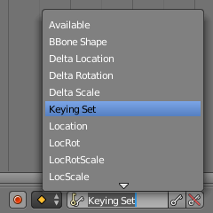

时间线编辑器¶
The Timeline editor, identified by a clock icon, is not much of an editor, but more used to view information and control animation playback.
时间线。
The Timeline is one of an animator's most useful tools as it can give a broad overview of a scene's animation. The Timeline can communicate the current time frame, either in frames or in seconds, where are the keyframes of the active object, the start and end frames of your animation, markers, etc.
时间线窗口有播放控制控件以控制动画的播放，暂停以及快速进退。
时间线也有针对关键帧，关键帧组以及标记符的实用工具。
Main View¶
The main Timeline region displays the animation frames over time.
Timeline Main Area.
调整视图¶
时间线能够按住[鼠标中键]左右平移。
You can zoom the Timeline by using Ctrl-MMB, the mouse Wheel,
or pressing NumpadMinus and NumpadPlus.
时间指点标¶
The Time Cursor is the green line, it is used to set and display the current time frame.
Time Cursor.
The Time Cursor can be set or moved to a new position by pressing or holding
LMB in the Timeline editor.
当前帧或者秒数能在时间指点标右下方显示出来，在“显示”菜单能看见相应设置。
时间指点标能够步进移动，试用[左箭头][右箭头]即可，或者按下[SHIFT]+[上箭头]、[SHIFT]+[下箭头]每十格一步移动。
Playback/Rendering Range¶
默认情况下，回放/渲染范围（这里是1到200帧）是用浅灰色表示的。按下[S]、[E]键可以设置开始和结束帧。回放区域能在按下[P]之后画一个框来设置。
关键帧¶
For the active and selected objects, keyframes are displayed as a yellow line. For Armatures, the object keyframes and the pose bones keyframes are drawn.
Only Selected Channels can be enabled. . For Armatures, this will draw the object keyframes, and the keyframes for the active and selected pose bones.
标记符¶
Markers are the small triangles, with their name near them. Markers are usually used to identify key parts of the animation.

Markers.
See the Markers page for more information.
Header¶
Menus¶
视图菜单¶
视图菜单控制着你看到的一切，以及他们的样式。
- Show Seconds
Ctrl-T - Whether to show the time in the X-axis and the Time Cursor as frames (based on the FPS) or as seconds.
- Lock Time to Other Windows
- ToDo.
- 显示帧数指示器
- 这能在当前帧的绿色线条下画出当前帧的帧数或者秒数
- Only Keyframes from Selected Channels
- 对于骨骼，这就会仅保留对象关键帧和姿态模式下选择的骨头的关键帧。
- 缓存
- 显示缓存
显示所有启用的缓存类型。
Softbody, Particles, Cloth, Smoke, Dynamic Paint, Rigid Body.

Timeline Cache.
- View All
Home - Maximize the area based on the Animation Range.
- View Frame
Numpad0 - Centers the Timeline to the Time cursor.
- Bind Camera to Markers
Ctrl-B - This is used switch cameras during animation. It binds the active camera to the selected markers. First select a camera. Then select the marker(s). Then use the function.
标题栏控制钮¶
标题栏控制钮
标题栏控制钮
Range Control¶
- Use Preview Range (clock icon)
- This is an alternative range used to preview animations. This works for the UI playback, this will not work for rendering an animation. See Preview Range.
- Lock Time Cursor to Playback Range (padlock icon)
- This limits the Time Cursor to the Playback Range.
Frame Control¶
- 起始帧
- The start frame of the animation/playback range.
- 结束帧
- The end frame of the animation/playback range.
- Current Frame
Alt-Wheel - The current frame of the animation/playback range. Also the position of the Time Cursor.
Player Control¶
These buttons are used to set, play, rewind, the Time Cursor.

播放器控制。
- Jump to start (⏮)
Shift-Ctrl-Down,Shift-Left - This sets the cursor to the start of frame range.
- Jump to previous keyframe (⏪)
Down - This sets the cursor to the previous keyframe.
- Rewind (◀)
Shift-Alt-A - This plays the animation sequence in reverse. When playing the play buttons switch to a pause button.
- Play (▶)
Alt-A - This plays the animation sequence. When playing the play buttons switch to a pause button.
- Jump to next keyframe (⏩)
Up - This sets the cursor to the next keyframe.
- Jump to end (⏭)
Shift-Ctrl-Up,Shift-Right - This sets the cursor to the end of frame range.
- Pause (⏸)
Alt-A - This stops the animation.
Synchronize Playback¶
3D View Red FPS.
When you play an animation, the FPS is displayed at the top left of the 3D View. If the scene is detailed and playback is slower than the set Frame Rate (see Dimensions Panel, these options are used to synchronize the playback.
- 无同步
- Do not sync, play every frame.
- 帧优化
- Drop frames if playback is too slow. This enables Frame Dropping from the Playback Menu.
- 音视频同步
- (Audio Video Synchronization). Sync to audio clock, dropping frames if playback is slow. This enables AV-sync and Frame Dropping from the Playback Menu.
Keyframe Control¶
- 自动关键帧

Timeline Auto Keyframe.
The "Record" red-dot button enables something called Auto Keyframe: It will add and/or replace existing keyframes for the active object when you transform it in the 3D View.
For example, when enabled, first set the Time Cursor to the desired frame, then move an object in the 3D View, or set a new value for a property in the UI.
When you set a new value for the properties, Blender will add keyframes on the current frame for the transform properties. Other use cases are Fly/Walk Mode to record the walk/flight path and Lock Camera to View to record the navigation in camera view.
- Auto Keying Set (red record icon)
- When enabled Auto Keyframe will insert new keyframes for the properties in the active Keying Set.
- Layered (two keys icon)
- Adds a new NLA Track and strip for every loop/pass made over the animation to allow non-destructive tweaking.
Note
Note that Auto Keyframe only works for transform properties (objects and bones), in the 3D Views (i.e. you can't use it e.g. to animate the colors of a material in the Properties editor...).
- Keyframe Type
- 关键帧的类型 on insertion.
- 主控关键帧组
- 
时间线关键帧组
Keying Sets are a set of keyframe channels in one. They are made so the user can record multiple properties at the same time. With a keying set selected, when you insert a keyframe, Blender will add keyframes for the properties in the active Keying Set. There are some built in keying sets, LocRotScale, and also custom keying sets. Custom keying sets can be defined in the panels .
- Insert Keyframes (key icon)
- 在当前帧插入当前关键帧组所中包含属性的关键帧。
- Delete Keyframes (striked through key icon)
- 在当前帧删除当前关键帧组所中包含属性的关键帧。